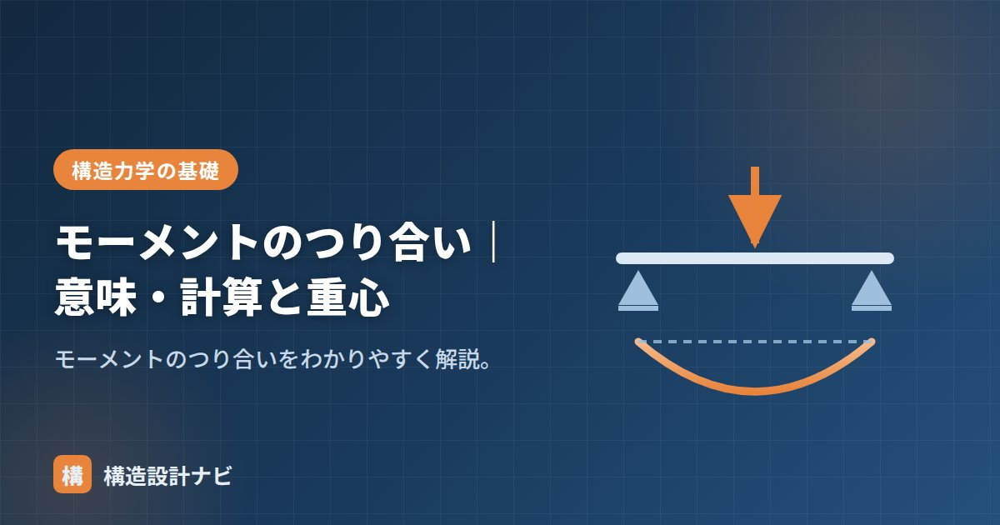

モーメントのつり合い｜意味・計算と重心

モーメントのつり合いとは、物体が回転しないために、ある点まわりのモーメントの和が0になる（ΣM＝0）条件のことです。構造物が静止し続けるために欠かせない条件で、反力や重心を求める計算の中心的な道具になります。
- モーメントのつり合いはΣM＝0。力のつり合いと合わせて「つり合いの3条件」。
- モーメントの中心はどこに取ってもよく、支点に取ると反力計算が一気に楽になる。
- 重心の位置も、モーメントのつり合いの考え方で求められる。
つり合いの意味
物体が静止して動かないためには、力のつり合い（ΣX＝0・ΣY＝0）に加えて、回転もしない＝モーメントのつり合い（ΣM＝0）が必要です。これがつり合いの3条件です。
力のつり合いだけでは、物体が平行移動しないことしか保証できません。例えば、大きさが同じで逆向きの2つの力が、離れた位置に平行に働くと、力の合計はゼロでも物体は回転してしまいます（これを偶力と呼びます）。回転も止めるために、モーメントのつり合いが独立した3つ目の条件として必要になるわけです。
計算への使い方（反力）
支点まわりでΣM＝0をとると、その支点の反力が式から消えるので、もう一方の反力を直接求められます。これが反力計算の定石です。
例えば、長さ6mの単純梁の中央（左端から3m）に集中荷重P＝12kNが作用する場合を考えます。左支点まわりでΣM＝0をとると、右支点の反力RBは次のように求まります。
このように、まず未知の反力を1つ消す点でモーメントを取り、残りは力のつり合いで解く、という手順が実務での基本的な流れです。
モーメントを取る点の選び方
モーメントの中心はどこに取ってもつり合いが成り立てば0になりますが、計算を楽にするには未知の反力や力が集中している点を選ぶのがコツです。支点に取れば、その支点の反力（および同じ点を通る力）が式から消え、連立方程式を解かずに済みます。
重心を求める
複数の重さがある物体の重心も、モーメントのつり合いで求められます。ある基準点まわりで「各重さ×距離」の和が、全体の重さ×重心位置に等しい、という関係です（→つり合いから重心を求める）。この考え方は、複数の材料が組み合わさった断面の図心を求める場合にも応用されます。
よくある質問
Q1. モーメントを取る点を変えると答えは変わりますか？
変わりません。つり合っている物体であれば、どの点まわりでモーメントを計算してもΣM＝0になります。ただし計算のしやすさは点の選び方で大きく変わります。
Q2. ΣM＝0だけで反力は全部求まりますか？
単純梁のような静定構造であれば、ΣX＝0・ΣY＝0・ΣM＝0の3つの式で、通常3つの未知反力をすべて求められます。
反力計算の答案を見ていると、わざわざ未知反力が残る点でΣM＝0を取って連立方程式を解いている人がいる。支点にモーメントの中心を置けば一発で解けるのに、と教えるたびに計算の見通しの良さの大切さを実感する。
「つり合いから重心を求める」「反力の求め方」「正負」「力のモーメント」「腕の長さ」をどうぞ。
反力を求める手順（図解）
ポイントは「求めたくない力が消える点を選ぶ」ことです。A点まわりでモーメントを取れば、A点の反力RAは腕の長さがゼロなのでモーメントを生みません。つまり式に登場しないので、未知数がRBだけになり、一発で解けます。これが実務でも試験でも使う定番のテクニックです。
つり合い計算の3ステップ
| 手順 | やること | 使う式 |
|---|---|---|
| ① 図に力を書き込む | 荷重と、未知の反力を仮の向き（上向き）で描く | — |
| ② 片方の支点まわりでΣM＝0 | もう片方の反力が求まる | ΣM ＝ 0 |
| ③ 鉛直・水平のつり合い | 残りの反力が求まる | ΣX ＝ 0、ΣY ＝ 0 |
③で計算した結果がマイナスになったら、仮定した向きが逆だったという意味です。計算をやり直す必要はなく、「実際は下向き（あるいは逆向き）だった」と読み替えれば正解になります。最初に向きを当てる必要がないのが、つり合い式の便利なところです。
平面の静定構造で使える式はΣX＝0、ΣY＝0、ΣM＝0の3つだけです。だから未知数が3つまでなら解ける（静定）、4つ以上なら解けない（不静定）という区分けが生まれます。単純梁は反力が3つ（ピン支点の水平・鉛直、ローラー支点の鉛直）なのでちょうど解け、両端固定梁は6つあるので解けません。この「数を数える」感覚が身につくと、構造力学の見通しが一気に良くなります。
まとめ
- モーメントのつり合いは ΣM＝0（回転しない条件）。
- 力のつり合い（ΣX=0・ΣY=0）と合わせてつり合いの3条件。
- 支点まわりのΣM＝0で反力を、つり合いで重心を求められる。
- モーメントの中心は未知反力の位置に取ると計算が楽になる。